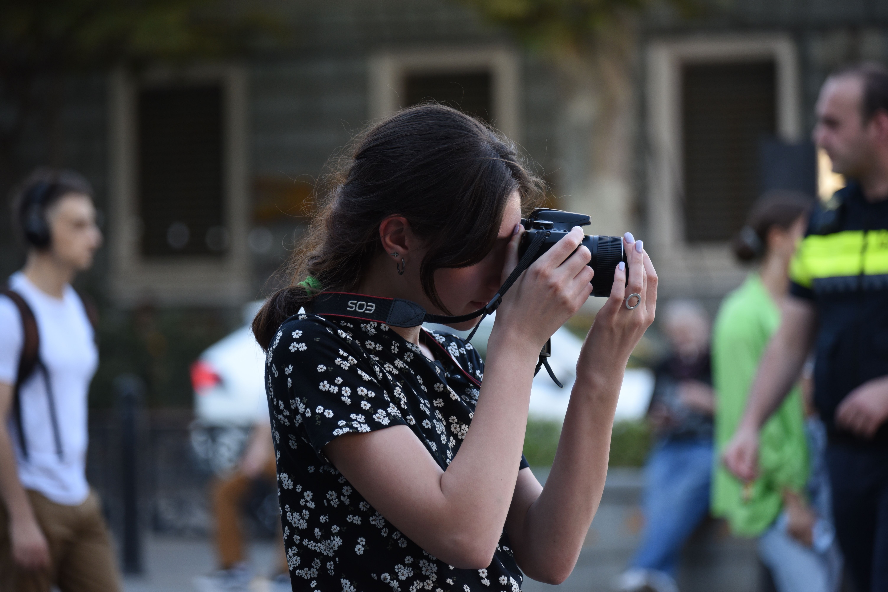
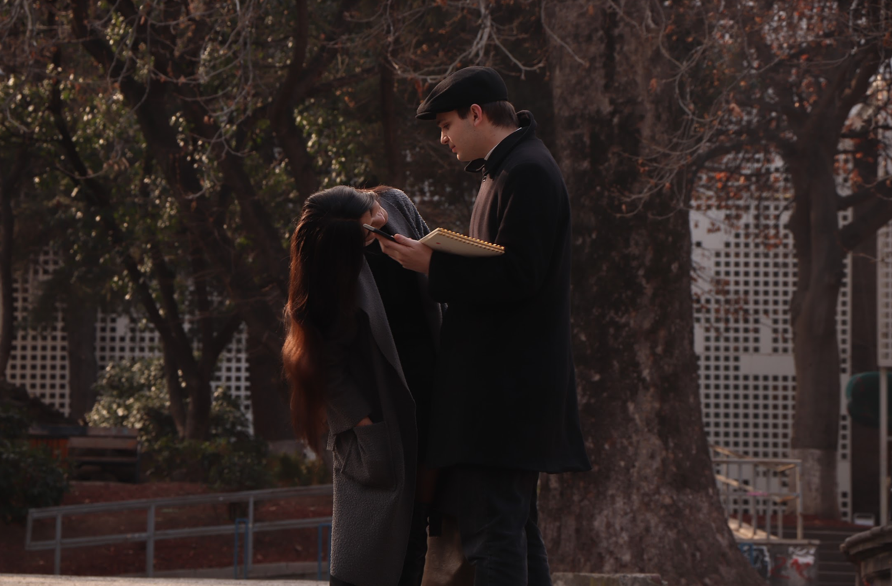

This page is about me
Here I'm just capturing a moment.
In the tender embrace of nineteen years, I, born on the 30th of December 2004, find solace and delight in the rich tapestry of life's pursuits. From the earliest whispers of childhood, the symphony of my learning has been diverse and harmonious—dancing, drawing, and even the gentle art of knitting. Today, the melody continues at university, where the vast expanse of knowledge unfolds before me, a myriad of possibilities waiting to be explored. Uncertain of the exact path my future profession may take, what remains crystal clear is the sheer joy I find in the act of learning itself.
An enchanting paradox lies within me—I am a seeker of knowledge without a fixed destination. The beauty lies not just in the destination but in the journey, and it is this philosophy that guides my explorations. As the chapters of my academic pursuits unfold, the essence of each subject becomes a brushstroke on the canvas of my evolving self.
And now, let me open a portal to a cherished period in my life through the lens of a talented photographer. These moments captured are a testament to the beauty of existence. However, the story doesn't end there, for I too am learning the art of photography. In sharing my works, I aim to offer glimpses into the world as I see it—a kaleidoscope of emotions, colors, and stories waiting to be unveiled.
Those photos were taken by a very good photographer. However, I am also learning photography and I will share my works with you.
